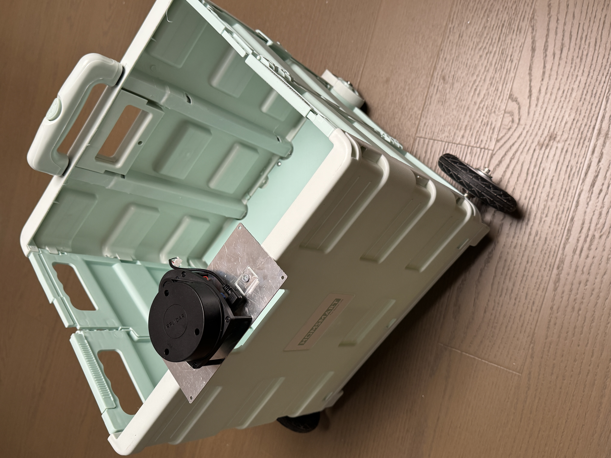
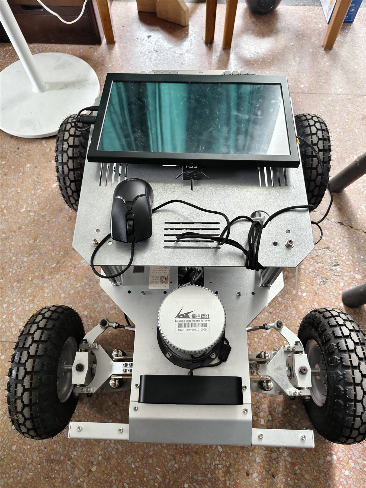
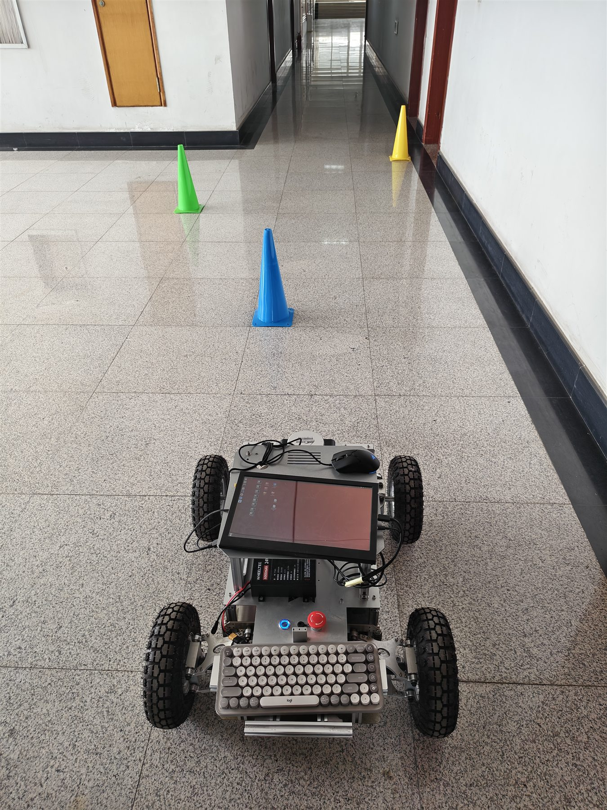
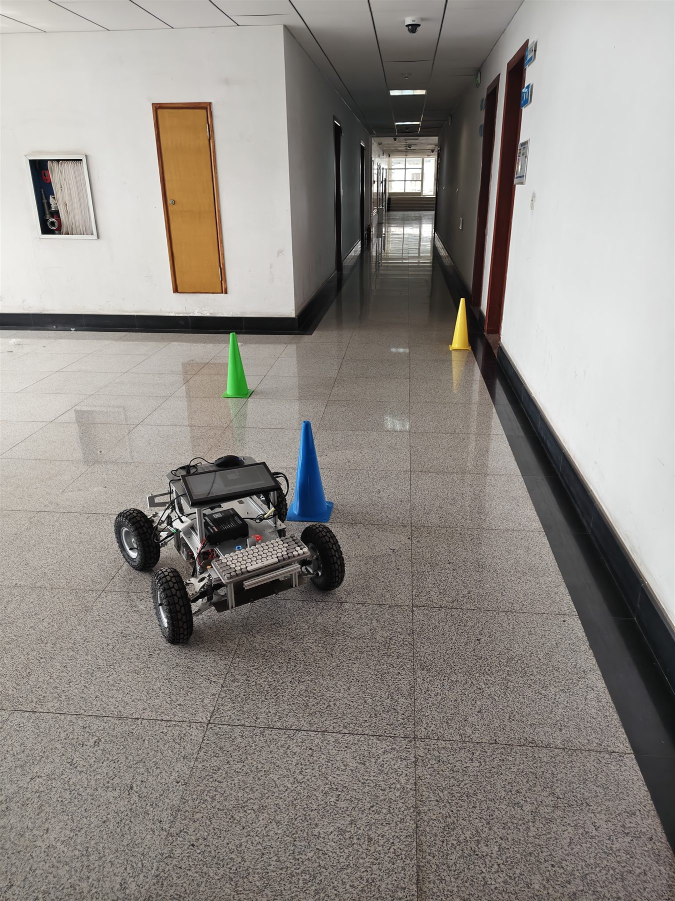

Hardware integration
An onboard computer, STM32 controller, LiDAR, dual-base-station UWB system, IMU, motor drivers, steering actuator, and wheel encoders formed the physical system.
An undergraduate robotics project integrating multi-sensor localization, global-local path planning, autonomous following, and dynamic obstacle avoidance for indoor retail environments.
Project Lead · Path-Planning Development · System Integration · Experimental Analysis
The complete system was deployed and evaluated on an integrated mobile robot platform in a simulated indoor retail environment.
The mean following distance was within the intended 1.0–1.5 m interval, while repeated navigation tests demonstrated centimeter-level lateral stability.
This project explored how sensing, planning, and motion control could be integrated into an autonomous shopping-cart system. The work began with the conversion of a conventional folding cart, including motorized drive installation, LiDAR mounting, embedded control, onboard computing, and ROS communication.
The complete software workflow was subsequently deployed on a dedicated Ackermann-steering mobile platform. The integrated system combined LiDAR–IMU mapping, robot localization, UWB target positioning, global-local path planning, closed-loop motion control, and physical experiment validation.

The project followed a complete robotics workflow from physical platform development to perception, planning, control, and experimental evaluation.
An onboard computer, STM32 controller, LiDAR, dual-base-station UWB system, IMU, motor drivers, steering actuator, and wheel encoders formed the physical system.
LiDAR–IMU factor-graph mapping and LM-enhanced AMCL provided the environment model and robot pose.
Dual-base-station UWB and variable-step Kalman filtering estimated a stable target distance and direction.
An improved A* planner reduced redundant exploration and removed unnecessary path nodes.
An improved DWA planner balanced goal direction, obstacle clearance, speed, and global-route consistency.
Planned velocities were converted into Ackermann steering and encoder-based closed-loop drive commands.
Repeated navigation, target-following, trajectory-stability, and obstacle-avoidance experiments evaluated the integrated system.
The final platform provided the mechanical stability, sensing coverage, onboard computing, and repeatable motion required for quantitative evaluation.
| Module | Configuration | Function |
|---|---|---|
| Onboard computer | Jetson Orin NX Super 16GB | ROS and algorithm execution |
| Chassis controller | STM32F407VET6 | Motor and steering control |
| LiDAR | Leishen C16 | Mapping and obstacle sensing |
| UWB | DWM3220 dual-base-station system | Target distance and direction |
| IMU | ICM20948 | Attitude and motion estimation |
| Chassis | Ackermann-steering platform | Stable trajectory execution |
| Encoder | 500-line AB encoder | Wheel-speed feedback |
| Battery | 24 V, 6000 mAh | System power supply |

The planning stack combined an improved A* global planner with an adaptive DWA local planner.
The global planner introduced target-oriented direction screening, obstacle-density-based heuristic adjustment, and two-stage redundant-node removal. These changes reduced unnecessary exploration and generated smoother routes with fewer turns.
The local planner added a target-distance term and dynamically adjusted obstacle-avoidance weights. In open space, it prioritized efficient forward motion. Near an obstacle, safety and clearance received greater weight.
In the 45×45 grid environment, explored nodes decreased from 785 to 202, runtime from 0.1321 s to 0.0473 s, and cumulative turning angle from 540° to 218.68°.
Front and rear UWB base stations continuously estimated the target’s relative distance and direction. LiDAR-based local planning remained active throughout the task to handle unexpected obstacles.
Estimate target distance and bearing using dual-base-station UWB.
Determine target direction and compare the measured distance with the safety threshold.
Generate the global route and evaluate collision-free local trajectories.
Send steering and velocity commands to the chassis controller.
The final evaluation combined repeated measurements with physical indoor experiments.
Three walking routes were tested three times each, producing nine measured target trajectories.
The robot completed ten navigation trials between fixed start and target positions.


As project lead, I coordinated the technical roadmap and system integration. My main technical work focused on global path planning, planner coordination, software-interface integration, experiment organization, and quantitative result analysis.